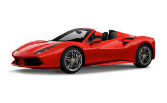
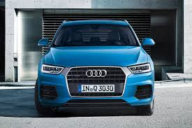
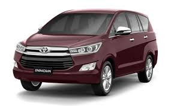

| Name:Keerthi Roll No.:1906092 | ||
|  | Ferrari is an Italian luxury sports car manufacturer based in Maranello, Italy. Founded by Enzo Ferrari in 1939 out of Alfa Romeo's race division as Auto Avio Costruzioni, the company built its first car in 1940. | Ferrari |
|  | Audi AG is a German automobile manufacturer that designs, engineers, produces, markets and distributes luxury vehicles. Audi is a member of the Volkswagen Group and has its roots at Ingolstadt, Bavaria, Germany. Audi-branded vehicles are produced in nine production facilities worldwide. | Audi AG |
|  | Toyota Innova Crysta available in 3 engine options. 2.8 L & 2.4 L disel and 2.4 L petrol. Featuring in the video is 2019 Toyota Innova Crysta Z Automatic White colour. Watch the video for more information about the New Toyota Innova Crysta Z Top Model Auto White Color | Tayota Innova |